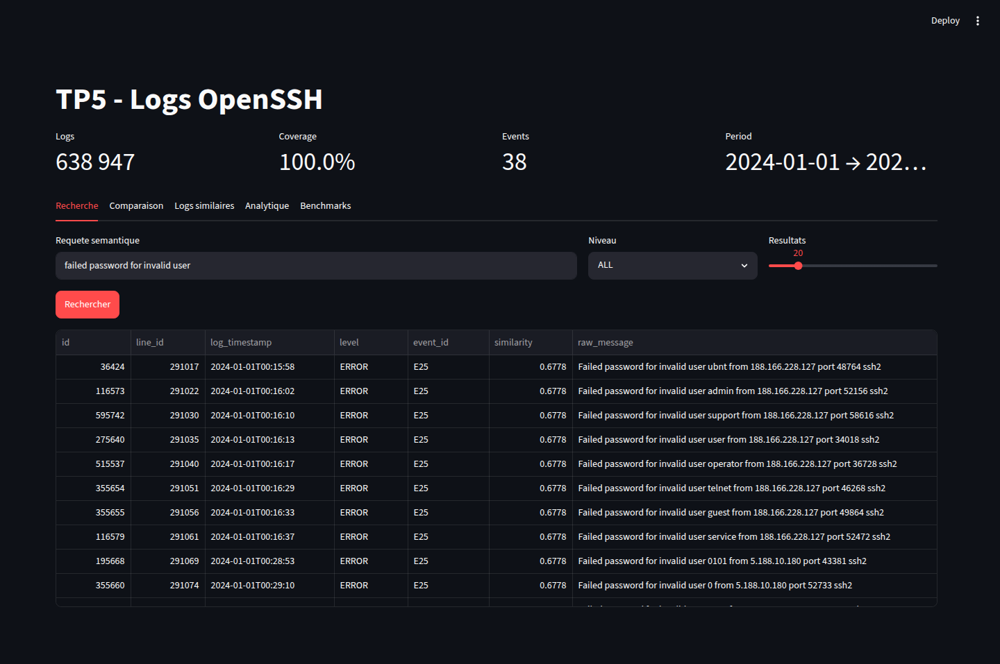
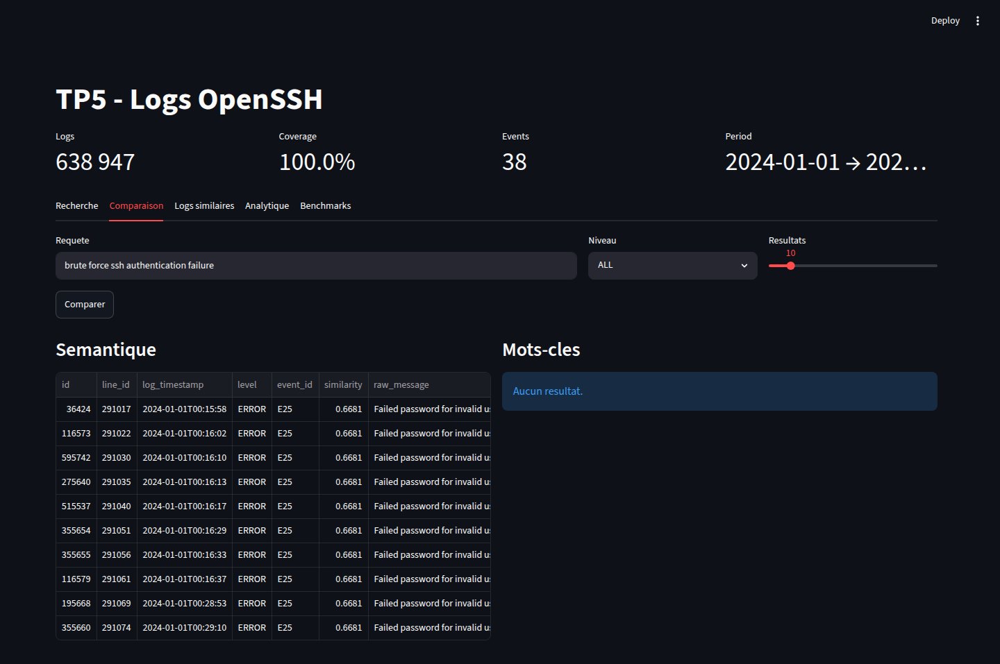
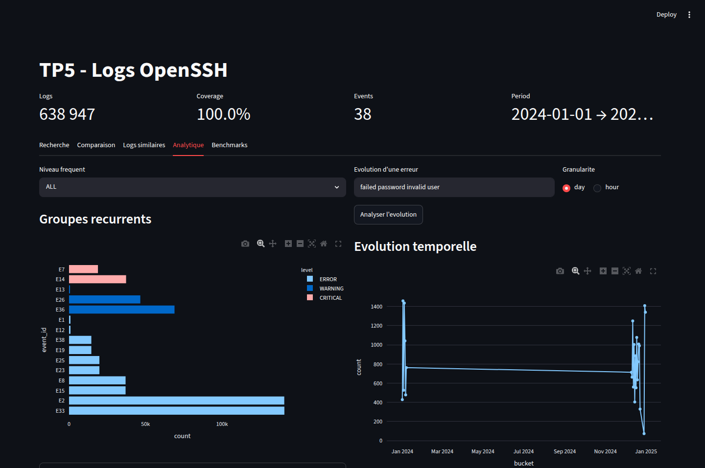
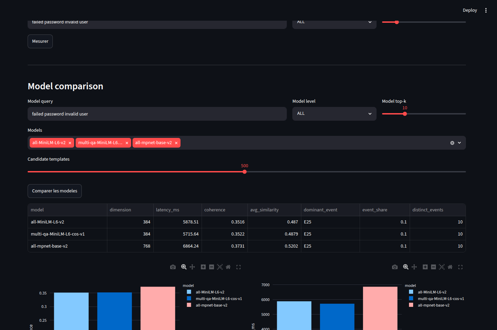

Pipeline Big Data
Ingestion, nettoyage, normalisation et partitionnement avec Apache Spark.
TP5 Big Data
Apache Spark - PostgreSQL/pgvector - Sentence-Transformers - FastAPI - Streamlit
Contexte
Les systemes distribues generent des volumes importants de logs textuels. Une recherche par mots-cles reste limitee lorsque les memes incidents sont formules differemment.
Comment transformer des logs massifs en une base interrogeable par similarite semantique et par analyses temporelles ?
Objectifs du projet
Ingestion, nettoyage, normalisation et partitionnement avec Apache Spark.
Generation d'embeddings, stockage dans pgvector et index HNSW.
Erreurs frequentes, logs similaires, evolution temporelle et comparaison mots-cles.
Dataset
Dec 10 06:55:48 LabSZ sshd[24200]:
Failed password for invalid user webmaster from 173.234.31.186 port 38926 ssh2
Le dataset contient les logs bruts, un CSV structure avec EventId et
EventTemplate, ainsi qu'une table de templates et occurrences.
Architecture
Pretraitement Spark
Extraction de la date, heure, hote, service, PID et contenu metier.
Utilisation des templates LogHub pour reduire le bruit des IP, ports et utilisateurs.
Sortie Parquet partitionnee par niveau : INFO, WARNING, ERROR, CRITICAL.
Le CSV traite sert au chargement rapide par COPY, tandis que le Parquet reste
disponible pour des analyses batch supplementaires.
Base de donnees
log_entries : toutes les lignes de logs nettoyees.event_templates : templates LogHub et occurrences.message_embeddings : embeddings des messages normalises distincts.pipeline_runs : traces d'execution du pipeline.CREATE INDEX ... USING hnsw
(embedding vector_cosine_ops);Vectorisation
Les embeddings ne sont pas stockes pour chaque ligne brute. Ils sont calcules pour les
messages normalises distincts, puis relies aux logs par normalized_message.
Demonstration

Baseline

Analyse

Benchmarks
Ce score n'est pas une precision supervisee : il complete l'analyse qualitative lorsque le dataset ne fournit pas de labels de pertinence par requete.
Comparaison de modeles

Validation
Conclusion
Ajouter des labels de pertinence, evaluer plus de datasets LogHub et combiner recherche lexicale et vectorielle dans un score hybride.